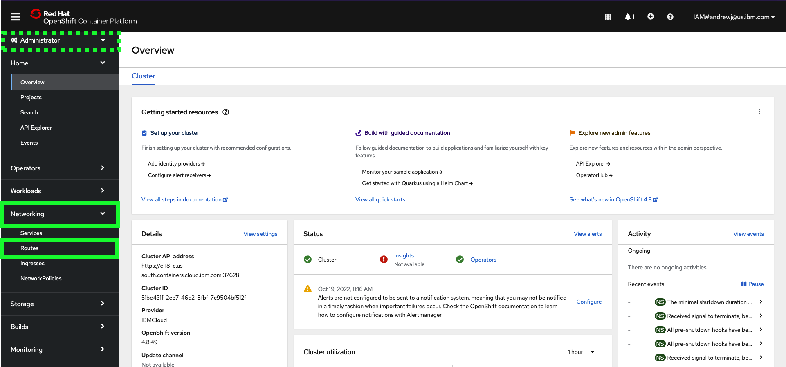
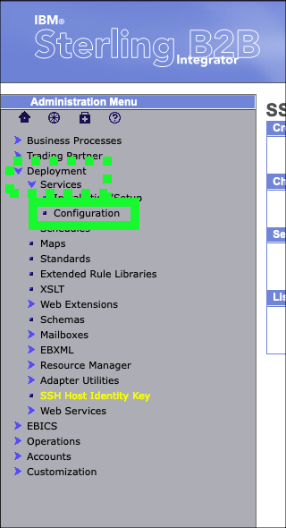
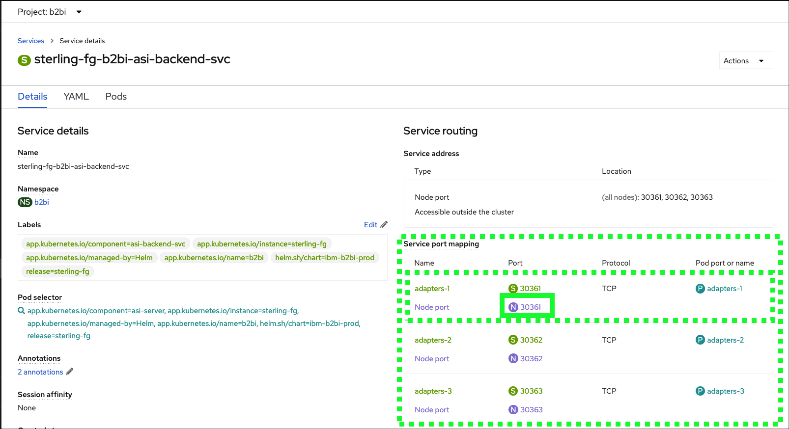

B2Bi Configuration Part 1
In this chapter, learn how to configure a Secure File Transfer Protocol (SFTP) adapter using the containerized B2Bi deployment.
Open the B2Bi dashboard and change password policies
- In the OpenShift web console, click Routes under the Networking section in left-hand panel.

- Click the All Projects pull-down menu and click the b2bi project.

BP quiz question
Several BP quiz questions will come from the OpenShift web console. When taking the BP quiz make sure the ITZ environment is still active and keep this demonstration script open.
- Notice all the routes that are currently defined in the b2bi Project, there are 15 of them

- To start the setup of the SFTP adapter, launch the IBM Sterling B2Bi dashboard by clicking on the route for the sterling-fg-b2bi-asi-internal-route-dashboard route in the Location column. Do not click the Route name, rather click the Route link in the Location column of the table.

- If a security risk is received in the browser, accept it. In a production environment certificates would be configured for these web pages.


Note: the images above are from Firefox running on MacOS. They will look different depending on browser and operating system.
Hint
As this is a new install, in this demonstration the default user ids and passwords will be used. To keep things simple in this demonstration, all passwords will be set to password. Not secure, but this will be a short lived demonstration environment.
- Enter admin in the User ID field and password in the Password field, and then click Sign In.
In the latest IBM Sterling B2B Integrator release, new password policies have been set that require users to change their password the first time they authenticate.
- Enter password in the Old Password field, and then enter passw0rd! in both the New Password and Retype Password fields and click Sign In.
For this demonstration environment, change the password policies to simplify the demonstration flow.
- Click Accounts in left-hand menu and then click Password Policy.

- Enter default in the Password Policy Name text entry field and click the Go! button in the Search section.

- Click the edit icon for the Default User Policy.

- Uncheck the Password required to contain special characters and Required password change on next login attempt check boxes and then click Save.

- Click Finish on the confirmation screen.

Important
In most cases, clients will typically strengthen the default password policy to match their corporate standards for passwords. Again, they are being reduced here to simplify the demonstration flow.
- Click Return on the completion screen.

Create a SSH Host Identity key
First, a SSH Host Identity needs to be created. The Host Identity Key is a Private/Public key pair used to identify the Application SFTP Server to remote clients. Note, for this demonstration, default values will be used where possible, but production deployments may use other values depending on client requirements.
BP quiz question
Several BP quiz questions will come from the B2Bi dashboard. When taking the BP quiz make sure the ITZ environment is still active and keep this demonstration script open.
- Click the Deployment menu item in left-hand menu bar and then click the SSH Host Identity Key option.

- Click the Go! button in the Create: New Host Identity Key box.
- Enter demo in the Host Name: field of the "New Host Identity Key" form and then click the Next button.

- Click Finish.

- Click Close on the pop-up dialog.
- Wait until the completed message is received and the click the Return button.

Create an SFTP adapter
Next, an SFTP adapter must be created which will utilize the OpenShift service port for B2Bi.
- Click the Services menu item under Deployment in the left-hand menu bar.
- Click the Configuration menu item under Services.

- Enter sftp in the Service Name field and click the Go! button in the Search box.

- Locate the SFTP Server Adapter entry in the table and click the edit button.

- Review the default settings and click Next.

- Review the settings on the SFTP Server Adapter: Configuration form.

The default SFTP Server Listen Port must be changed to the B2Bi service port configured in OpenShift.
- Switch back to the OpenShift web console browser window or tab and click Services under the Networking in the left-hand menu bar.
BP quiz question
There is a quiz question related to other B2Bi services. You may want to take note of the other service names or take a screen capture.
- Find and click the sterling-fg-b2bi-asi-backend-svc link.

- Locate and copy the Node Port number for adapters-1 in the Service port mapping table.

-
Record the Node Port number, it will be used several times during this demonstration.
-
Switch back to the B2Bi Dashboard browser window or tab.
BP quiz question
There is a quiz question related to configuring the SFTP adapter. Before clicking Next in the following step, look at the alternate Compression type available for the SFTP adapter. You may want to record that value.
- Enter or copy the recorded Service Port number into the SFTP Server Listen Port entry field and click Next.

- Review the default settings on the SFTP Server Adapter: Configuration: Document Storage page and click Next.

- Review the default settings on the SFTP Server Adapter: Add Policies page and click Next.

- Review the default settings on the SFTP Server Adapter: Configuration page and click Next.

- Review the default settings on the SFTP Server Adapter: Extractability page and click Next.

- Review the SFTP Server Adapter: Confirmation page and click Finish.
- Click Return after the new SFTP adapter has been created.
- Click the checkbox next to the SFTP Server Adapter to start the adapter.
- Click the icon next to the SFTP Server Adapter.

- Verify the SFTP Server Adapter is Running and then click the Close button.
- Click the Logout link to log out of the B2Bi dashboard.

Now that the SFTP adapter is running, it time to move to the next step in the configuration of B2Bi.